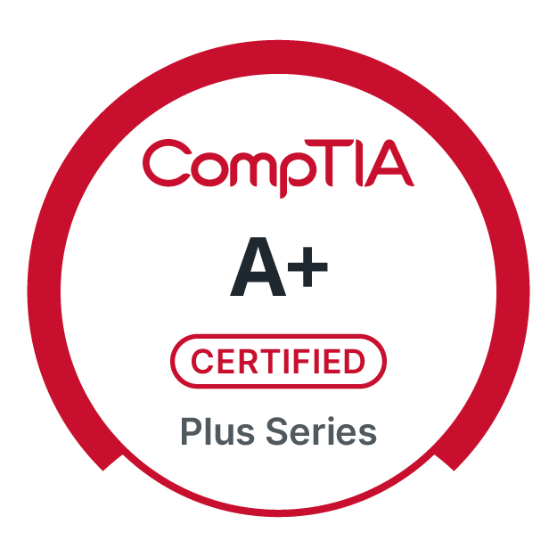
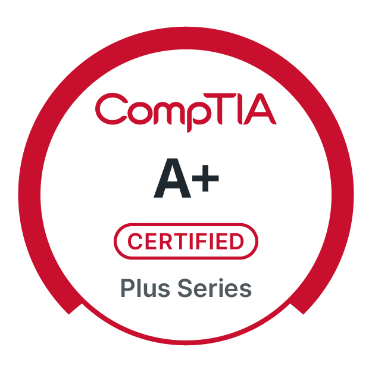

My Work
Cybersecurity Bootcamp Project
A full-scale Vulnerability Assessment, Penetration Testing (VAPT), and Forensic Investigation conducted during a 16-week Cybersecurity Bootcamp. The assessment uncovered 58 vulnerabilities (16 high-risk) and recovered 5 forensic artifacts from a simulated enterprise lab.
- Kali Linux
- Nmap
- Metasploit
- Hydra
- Greenbone (OpenVAS)
- DVWA
- Autopsy

Master Thesis
Digital Twin-based Intrusion Detection System (IDS),
Robert Bosch GmbH
Loction: Stuttgart,Germany
Designed and implemented a Digital Twin-based IDS during my Master’s thesis at Robert Bosch GmbH, enhancing real-time threat visibility and cyber resilience for Industry 4.0 environments using Docker and Python automation.
- Docker
- Python
- Shell Scripting
- Linux
- Network Monitoring
- Industrial IoT
Security & Privacy Specialist,
Continental Automotive Technologies GmbH
Loction: Regensburg,Germany
Performed Threat Analysis and Risk Assessment (TARA) aligned with ISO/SAE 21434 and UN ECE R155, designed secure architectures, and coordinated risk mitigation for embedded automotive platforms.
- ANSYS Medini Analyze
- ISO/SAE 21434 & UN ECE R155 Compliance
- Threat Modeling & Risk Mitigation
- Security Architecture Design
- Stakeholder Collaboration & Documentation
Bilingual Assistant Application Developer,
Fujitsu Consulting India
Loction: Pune,India
Built multi-channel UI features and mobile interfaces; translated Japanese technical documentation into performant, standards-compliant JavaScript and improved usability for enterprise clients.
- JavaScript / HTML / CSS
- UI & UX Optimization
- Japanese ↔ English Technical Translation
- Agile Development & Collaboration
- Performance Tuning & Testing

Trainee,
NTT DATA
Loction: Pune,India
Completed professional Java development training focused on object-oriented programming and application design fundamentals, plus Japanese language training (JLPT N4) for cross-border collaboration.
- Java & Object-Oriented Programming
- Software Design Fundamentals
- Project Lifecycle Understanding
- Japanese Language (JLPT N4)
- Cross-Cultural Team Communication

 

Skills
Technical Skills
- Cybersecurity Operations & Threat Management: Threat Analysis & Risk Assessment (TARA), STRIDE, VAPT, Security Architecture, Digital Forensics
- Security Tools & Platforms: Nmap, Wireshark, Greenbone (OpenVAS), Metasploit, Hydra, Autopsy, Tcpdump, ANSYS Medini Analyze
- Security Frameworks & Standards: NIST, MITRE ATT&CK, ISO/SAE 21434, ISO 27001, GDPR, OWASP Top 10, UN ECE R155
- Network & System Security: Firewalls, IDS/IPS, VPNs, TCP/IP, Prometheus, Grafana, Docker Security
- Development & Automation: Python, PowerShell, Shell/Bash, Detection & Response Automation, Kali Linux
- Version Control & Project Management: Git, GitLab, SVN, Jira, Stakeholder Communication, Security Workshops
- Consulting & Collaboration: Stakeholder Communication, Security Workshops & Training, Technical Documentation, Cross-functional Team Coordination, Risk Mitigation Planning
Languages
- English (Fluent)
- German (Level B1 – in progress)
- Japanese (Level – JLPT N3)
- Hindi
- Marathi
About Me

I am driven by the challenge of reducing cyber risk and building secure systems across IT and embedded environments. Over the past 3+ years, I have focused on threat analysis, vulnerability assessments, and risk management to help organizations strengthen their security posture, reduce cyber risk, and make informed, security-driven decisions.
At Continental Automotive Technologies, I executed threat analysis across multiple attack paths, performed vulnerability assessments, and supported risk management activities that enabled prioritized security controls and contributed to cyber-resilient automotive architectures. I also developed structured security documentation, risk reports, and mitigation strategies that supported engineering teams, suppliers, and stakeholders throughout the development lifecycle.
Alongside my CompTIA CySA+, Security+, and A+ certifications, I bring hands-on experience in penetration testing, log analysis, digital forensics, and attack surface evaluations. During my Master’s thesis at Robert Bosch, I built a Digital Twin based Intrusion Detection System using Docker for Industry 4.0 environments, improving anomaly-detection accuracy by 25% and enabling proactive threat identification. Before transitioning into cybersecurity, I worked as a bilingual (Japanese- English) software developer at Fujitsu collaborating onsite in Tokyo, gaining strong technical and cross-cultural experience.
Across my roles in Germany, Japan, and India, I have built a global professional background and excelled in cross-functional and multicultural environments. I am focused to build secure digital systems, reduce organizational risk, and strengthen cybersecurity posture across IT landscapes. As I continue deepening my expertise in cybersecurity, I welcome connections with professionals who are working to advance secure and resilient digital systems.
Get in Touch
I am always open to connecting with professionals to discuss potential opportunities, exchange ideas, or explore areas of collaboration. If you would like to get in touch, please reach out through my LinkedIn profile using the link below.
Visit my LinkedIn